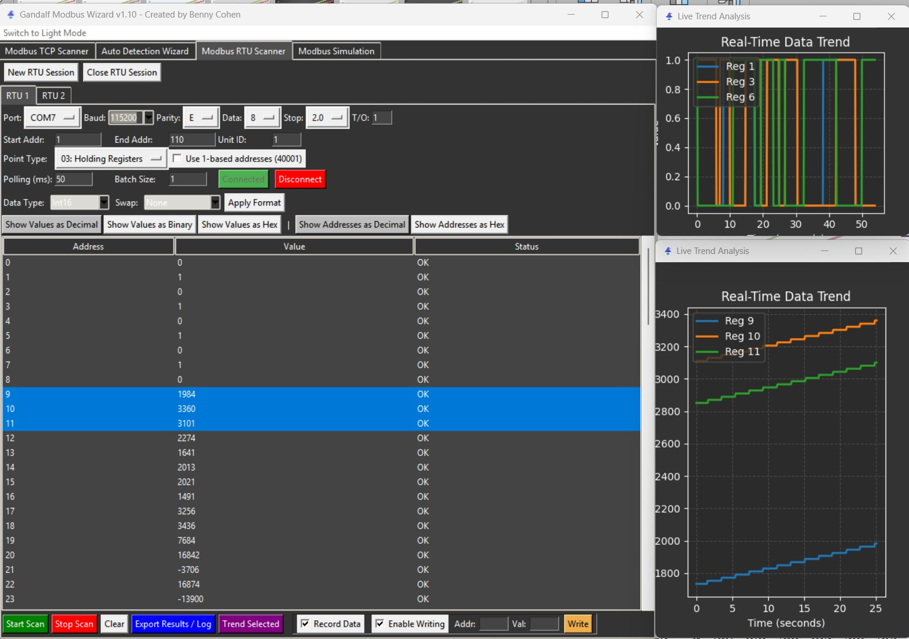
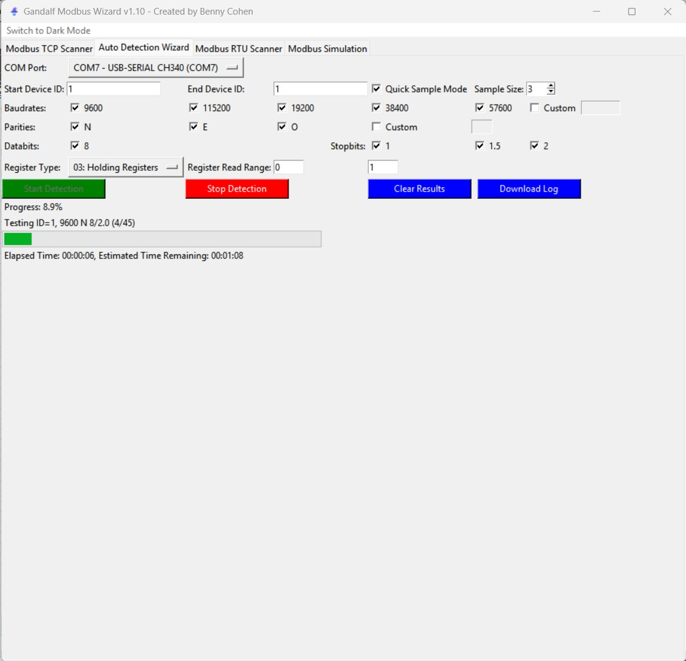
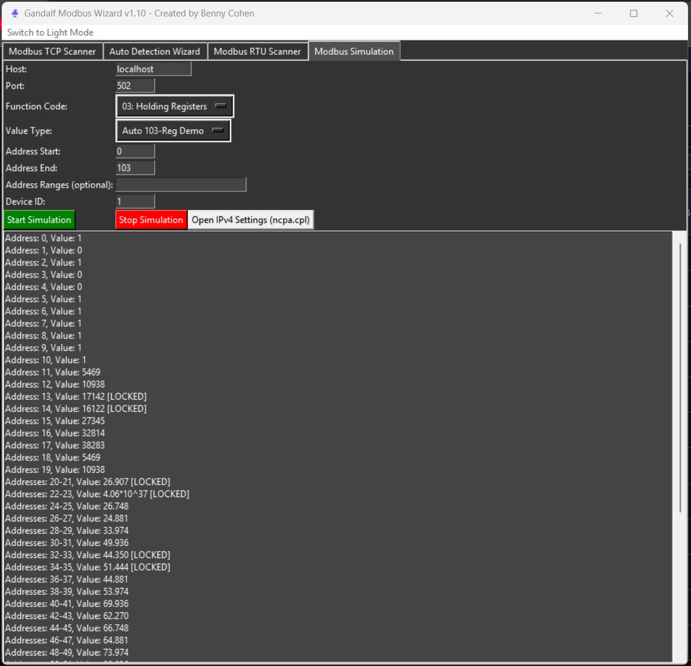

Auto-detect serial settings
Cycle through common baud rate, parity, data-bit, stop-bit, and device-ID combinations.
Industrial communications toolkit
Scan, troubleshoot, trend, write, and simulate Modbus TCP and RTU from one focused desktop utility.
Microsoft Store installation and updates · Public source and cross-platform builds also available.
One bench. One toolkit.
Cycle through common baud rate, parity, data-bit, stop-bit, and device-ID combinations.
Read and write registers with flexible address ranges, polling rates, and data formats.
Plot registers together to inspect stability, compare signals, and visualise PID behaviour.
Run a virtual Modbus device and lock manual register values while testing a client.
See what the wire is doing



Practical extras
Support portal
Support covers installation, packaging, defects, and documented Gandalf features. Keep passwords, customer information, and private register maps out of public reports.